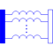
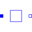
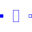

M_TransformerGeneric transformer with free number of inductors |

|
Information
This information is part of the Modelica Standard Library maintained by the Modelica Association.
The model M_Transformer is a model of a transformer with the possibility to choose the number of inductors. Inside the model, an inductance matrix is built based on the inductance of the inductors and the coupling inductances between the inductors given as a parameter vector from the user of the model.
An example shows that approach:
The user chooses a model with three inductors, that means the parameter N has to be 3. Then he has to specify the inductances of the three inductors and the three coupling inductances. The coupling inductances are no real existing devices, but effects that occur between two inductors. The inductances (main diagonal of the inductance matrix) and the coupling inductances have to be specified in the parameter vector L. The length dimL of the parameter vector is calculated as follows: dimL=(N*(N+1))/2
The following example shows how the parameter vector is used to fill in the inductance matrix. To specify the inductance matrix of a three inductances transformer (N=3):

the user has to allocate the parameter vector L[6] , since Nv=(N*(N+1))/2=(3*(3+1))/2=6. The parameter vector must be filled like this: L=[1,0.1,0.2,2,0.3,3] .
Inside the model, two loops are used to fill the inductance matrix to guarantee that it is filled in a symmetric way.
Parameters (3)
| N |
Value: 3 Type: Integer Description: Number of inductors |
|---|---|
| L |
Value: {1, 0.1, 0.2, 2, 0.3, 3} Type: Inductance[dimL] (H) Description: Inductances and coupling inductances |
| Lm |
Value: Type: Inductance[N,N] (H) Description: Complete symmetric inductance matrix, calculated internally |
Connectors (2)
| p |
Type: PositivePin[N] Description: Positive pin |
|
|---|---|---|
| n |
Type: NegativePin[N] Description: Negative pin |
Used in Components (2)
|  |
Modelica.Electrical.Analog.Lines.M_OLine Multiple line segment model |
|  |
Modelica.Electrical.Analog.Lines.M_OLine Multiple line last segment model |